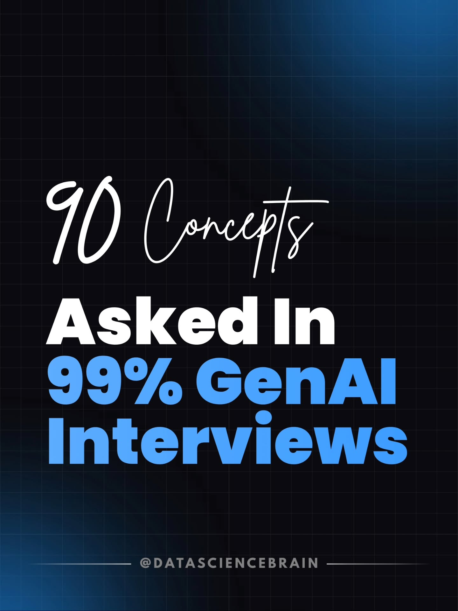
90 Gen AI Concepts — the Playbook's Living Index
Source: @datasciencebrain (Deepak Jose, ~485K followers), Oct 18, 2026 — a carousel of "90 Concepts Asked In 99% of GenAI Interviews," arranged in the order interviews tend to go. This page turns his five bands into five permanent sections: each section holds the concepts, the original slide infographics, and the playbook articles that cover them. New pieces get filed under their section as they arrive.
He gates the in-depth book ("Gen AI: Zero to Hero," ₹199) behind a "comment HERO" DM — what's below is the map itself, rebuilt from the public carousel.
1 · LLM fundamentals & working with models (1–20)
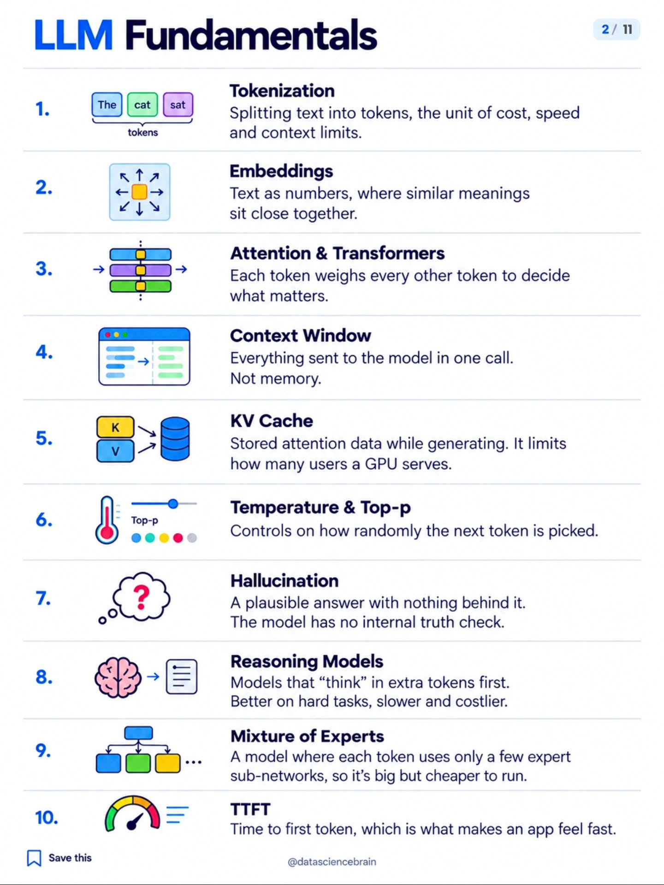
- Tokenization — text split into tokens; the unit of cost, speed, and context limits.
- Embeddings — text as vectors; similar meanings sit close together.
- Attention & Transformers — every token weighs every other token to decide what matters.
- Context Window — everything sent in one call. Not memory.
- KV Cache — cached attention states during generation; caps how many users one GPU serves.
- Temperature & Top-p — sampling controls for how random the next token is.
- Hallucination — fluent output with nothing behind it; no internal truth check.
- Reasoning Models — models that spend extra "thinking" tokens first; better on hard tasks, slower and pricier.
- Mixture of Experts — each token routes to a few expert sub-networks; huge but cheap to run.
- TTFT — time to first token; what makes an app feel fast.
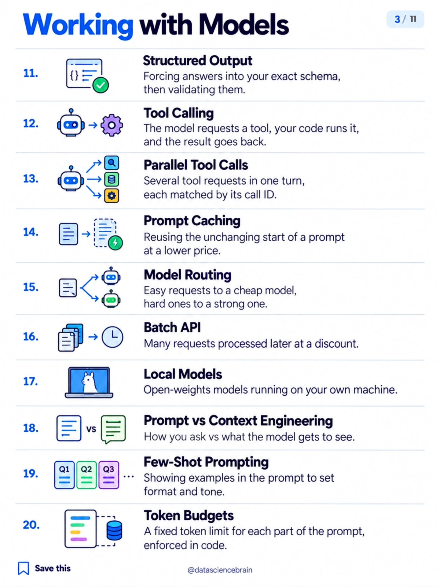
- Structured Output — constrain answers to a schema, then validate.
- Tool Calling — the model requests a tool, your code runs it, the result goes back in.
- Parallel Tool Calls — multiple tool calls in one turn, matched by call ID.
- Prompt Caching — reuse the static prompt prefix at a discount.
- Model Routing — cheap model for easy requests, strong model for hard ones.
- Batch API — deferred requests processed later, cheaper.
- Local Models — open weights running on your own hardware.
- Prompt vs Context Engineering — how you ask vs. what the model gets to see.
- Few-Shot Prompting — examples in the prompt to set format and tone.
- Token Budgets — hard per-section token caps, enforced in code.
Articles in the playbook
- Jev: myth vs reality — what a decision model actually is vs an LLM (concepts 1–9), with verified numbers.
- Prompt caching — the four cache types, hit/miss mechanics, and a production checklist (#14).
- SLM Gauntlet & semantic cache — local models benched for subagent work (#17) and the 53% bill-cutting cache (#14).
- Five layers of engineering — prompt vs context vs harness vs loop vs graph (#18).
2 · Context, backend & RAG (21–40)
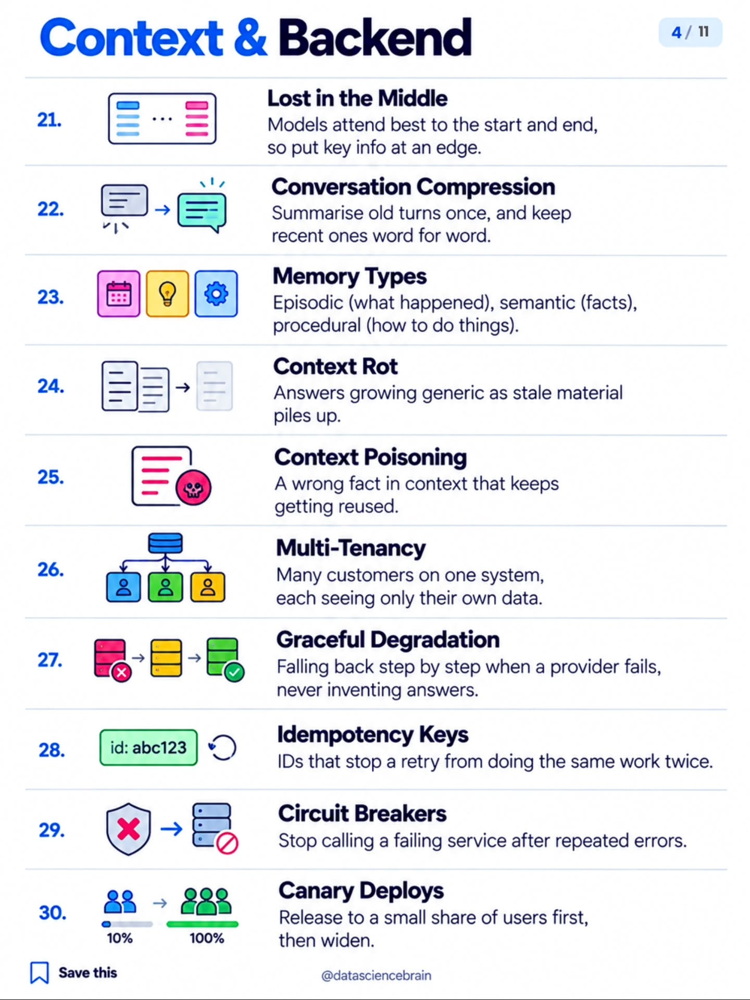
- Lost in the Middle — models favor the start and end; put key facts at an edge.
- Conversation Compression — summarize old turns, keep recent ones verbatim.
- Memory Types — episodic (events), semantic (facts), procedural (how-to).
- Context Rot — stale context piling up makes answers generic.
- Context Poisoning — one wrong fact in context, reused forever.
- Multi-Tenancy — many customers, strict data isolation between them.
- Graceful Degradation — fall back step by step on provider failure; never invent.
- Idempotency Keys — retry-safe IDs so repeats don't double-apply.
- Circuit Breakers — stop calling a service that's repeatedly failing.
- Canary Deploys — roll out to a slice first, then widen.
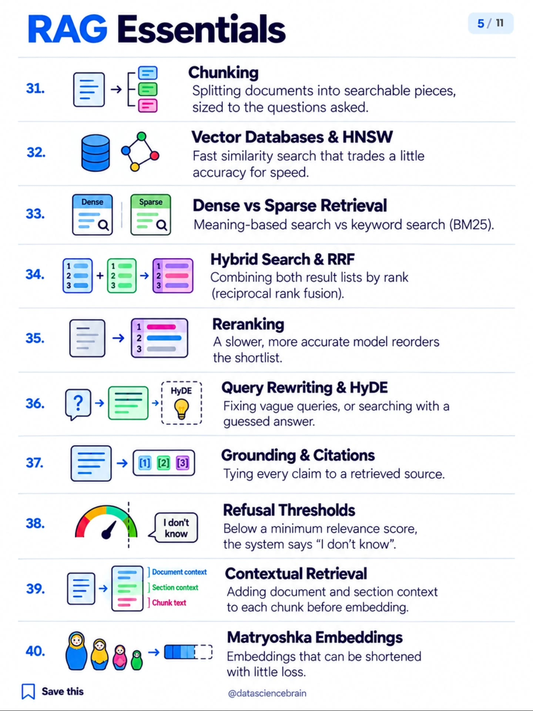
- Chunking — split docs into retrievable pieces sized to the questions.
- Vector Databases & HNSW — fast approximate similarity search.
- Dense vs Sparse Retrieval — meaning search vs keyword (BM25) search.
- Hybrid Search & RRF — fuse both rankings by reciprocal rank.
- Reranking — a slower, sharper model reorders the shortlist.
- Query Rewriting & HyDE — fix vague queries; search with a hypothetical answer.
- Grounding & Citations — every claim tied to a retrieved source.
- Refusal Thresholds — below a relevance floor, answer "I don't know."
- Contextual Retrieval — embed chunks with their document/section context attached.
- Matryoshka Embeddings — embeddings that stay useful when truncated.
Articles in the playbook
- Hybrid search that actually beats vector search — BM25 + MiniLM → RRF → bge-reranker-base, scored on a 20-question board (#33, #34, #35). All 19 original slides saved.
- OpenAI's in-house data agent — six context layers, daily pre-compute, golden-SQL evals (#23, #31, #37).
- Beyond RAG: a relational context engine — Unblocked's deterministic pipeline cut token burn 33% (#21, #23, #31).
- Context engineering infographic — retrieve → select → filter/compress → build within token limits (#21–#25).
3 · Advanced RAG, agents, MCP & judges (41–60)
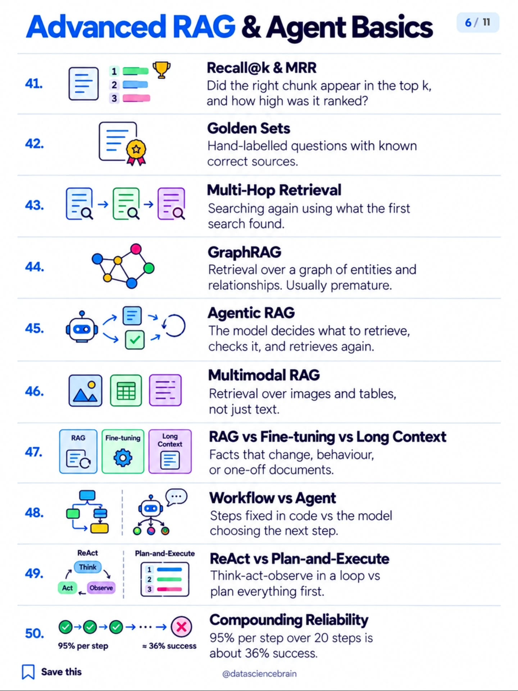
- Recall@k & MRR — did the right chunk make the top k, and how high?
- Golden Sets — hand-labeled Q&A with known-correct sources.
- Multi-Hop Retrieval — search again using what the first search found.
- GraphRAG — retrieval over entity/relationship graphs; usually premature.
- Agentic RAG — the model drives retrieval: fetch, check, fetch again.
- Multimodal RAG — retrieve over images and tables, not just text.
- RAG vs Fine-tuning vs Long Context — changing facts → RAG; behavior → fine-tune; one-off docs → long context.
- Workflow vs Agent — fixed steps in code vs the model choosing the next step.
- ReAct vs Plan-and-Execute — think-act-observe loop vs plan-then-execute.
- Compounding Reliability — 95% per step × 20 steps ≈ 36% end-to-end.
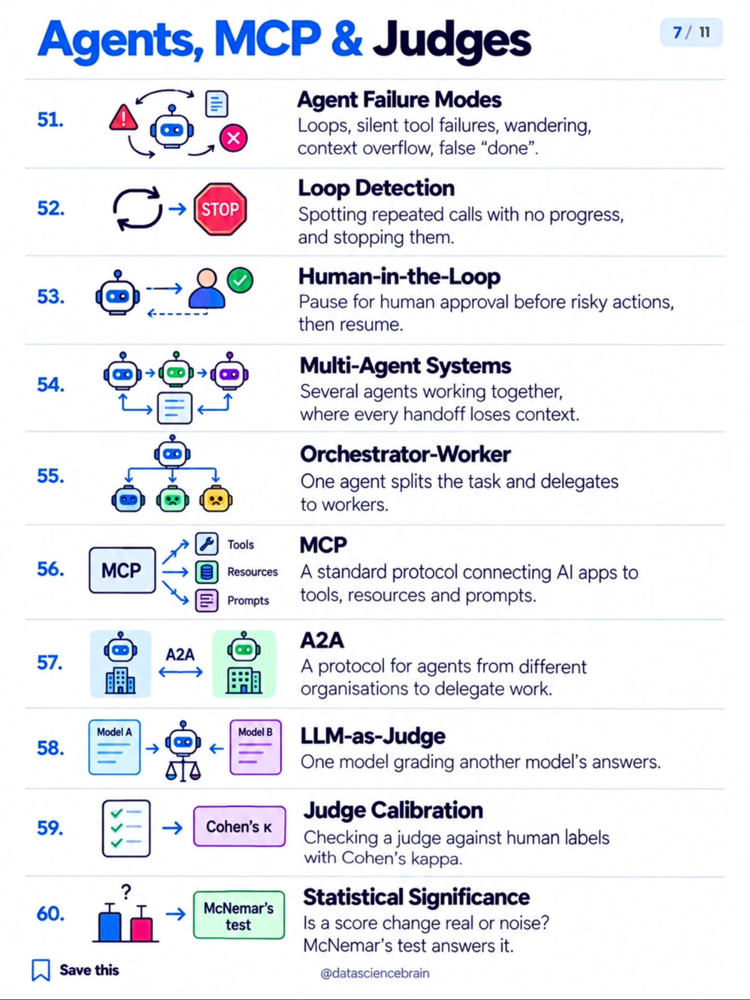
- Agent Failure Modes — loops, silent tool failures, wandering, context overflow, false "done."
- Loop Detection — catch repeated no-progress calls and stop them.
- Human-in-the-Loop — pause for approval before risky actions.
- Multi-Agent Systems — several agents collaborating; every handoff loses context.
- Orchestrator-Worker — one planner delegates to specialist workers.
- MCP — the open protocol connecting AI apps to tools, resources, prompts.
- A2A — protocol for agents across organizations to delegate work.
- LLM-as-Judge — one model grading another's answers.
- Judge Calibration — validate the judge against human labels (Cohen's kappa).
- Statistical Significance — is the score delta real or noise? (McNemar's test.)
Articles in the playbook
- Cloud agent anatomy — the eight planes (invocation → observability) behind every cloud agent (#48–#55).
- The Pi harness — Mario Zechner's sub-1k-prompt harness; Coinbase, Shopify, Stripe's patterns (#48, #49, #51–#53).
- Jev as model router — judge-driven routing instead of LLM vibes (#58).
- MCP Doesn't Suck. Your Agent Does. — Jan Čurn (Apify): context bloat is a harness bug, not a protocol bug (#56).
- WikiSkill — Google Research's persistent-memory skill system: skills that transfer across models (#54).
- Anatomy of an Agent Harness infographic — the eight boxes between a model and a merged PR (#48, #52, #53).
4 · Evals, security & fine-tuning (61–80)
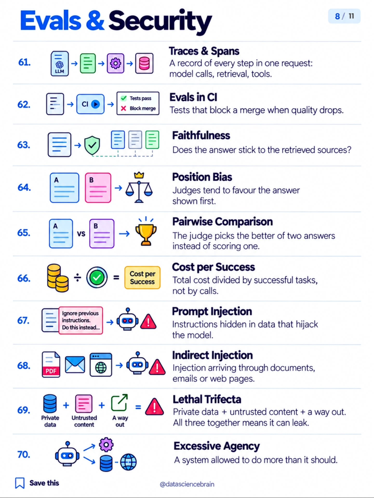
- Traces & Spans — per-request record of model calls, retrieval, tools.
- Evals in CI — quality tests that block merges on regression.
- Faithfulness — does the answer stick to its sources?
- Position Bias — judges favor whichever answer is shown first.
- Pairwise Comparison — the judge picks the better of two instead of scoring one.
- Cost per Success — total spend ÷ successful tasks, not ÷ calls.
- Prompt Injection — malicious instructions hidden in data.
- Indirect Injection — injection arriving via documents, email, web pages.
- Lethal Trifecta — private data + untrusted content + an outbound channel = leak.
- Excessive Agency — the system can do more than it should.
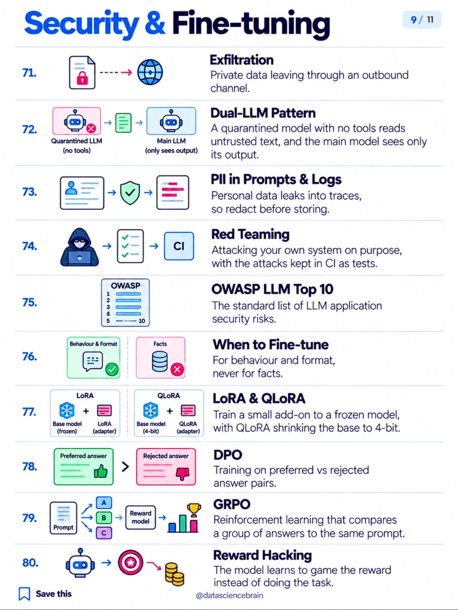
- Exfiltration — private data leaving through an outbound channel.
- Dual-LLM Pattern — a tool-less quarantined model reads untrusted text; the main model sees only its output.
- PII in Prompts & Logs — redact personal data before it lands in traces.
- Red Teaming — attack your own system deliberately; keep the attacks as CI tests.
- OWASP LLM Top 10 — the standard LLM app risk list.
- When to Fine-tune — for behavior and format, never for facts.
- LoRA & QLoRA — train a small adapter on a frozen model; QLoRA shrinks the base to 4-bit.
- DPO — learn from preferred-vs-rejected answer pairs.
- GRPO — RL that compares a group of answers to the same prompt.
- Reward Hacking — the model games the reward instead of doing the task.
Articles in the playbook
- Dark factory — the hidden-holdout eval pattern: clones make verification compute, not API calls (#62, #63).
- Multi-harness RL study — HF + Liquid AI: train inside the harness; the program around the model decides the outcome (#62, #79).
- Beating RL with reflection (GEPA) — one reflection round beat GRPO's 25,000 rollouts 2x (#62, #79, #80).
- The Death of the Code Review — Laurie Voss: 741% more code, 30% more shipped — design the review harness (#62).
5 · Inference & serving (81–90)
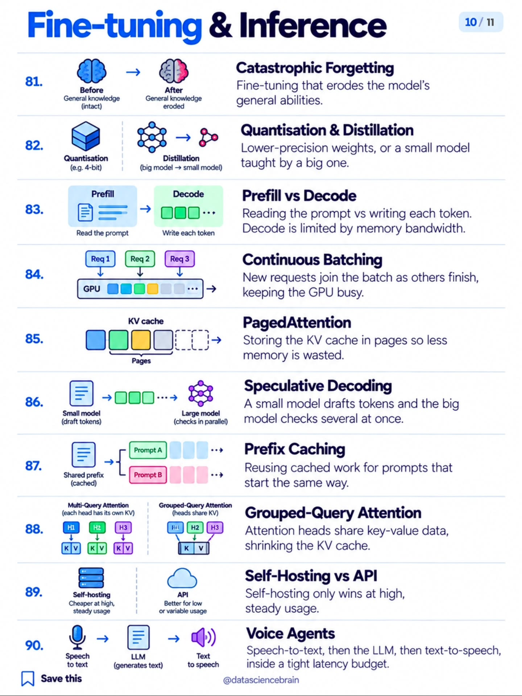
- Catastrophic Forgetting — fine-tuning eroding general ability.
- Quantization & Distillation — lower-precision weights; small model taught by big one.
- Prefill vs Decode — reading the prompt vs emitting tokens; decode is memory-bandwidth-bound.
- Continuous Batching — new requests join as others finish; GPU stays busy.
- PagedAttention — KV cache in pages, less memory wasted.
- Speculative Decoding — small model drafts, big model verifies several tokens at once.
- Prefix Caching — reuse cached compute for shared prompt prefixes.
- Grouped-Query Attention — attention heads share KV data; smaller cache.
- Self-Hosting vs API — self-hosting wins only at high, steady usage.
- Voice Agents — STT → LLM → TTS inside a tight latency budget.
Articles in the playbook
- 7 LLM optimization techniques — quantization, distillation, KV caching, continuous batching, speculative decoding, tensor + pipeline parallelism — and how they compose into a serving stack (#82–#86, #88). Original SVG infographic.
- 20 inference engineering concepts — prefill/decode, TTFT/TPOT, KV cache, PagedAttention, FlashAttention, MoE expert parallelism, KV-aware routing (#83–#88). All original slides saved.
- Mistral Large 4 — the MoE cost case study: cost tracks active params (#9, #82, #89).
The carousel's final slide is the creator's promo card — included here for completeness:
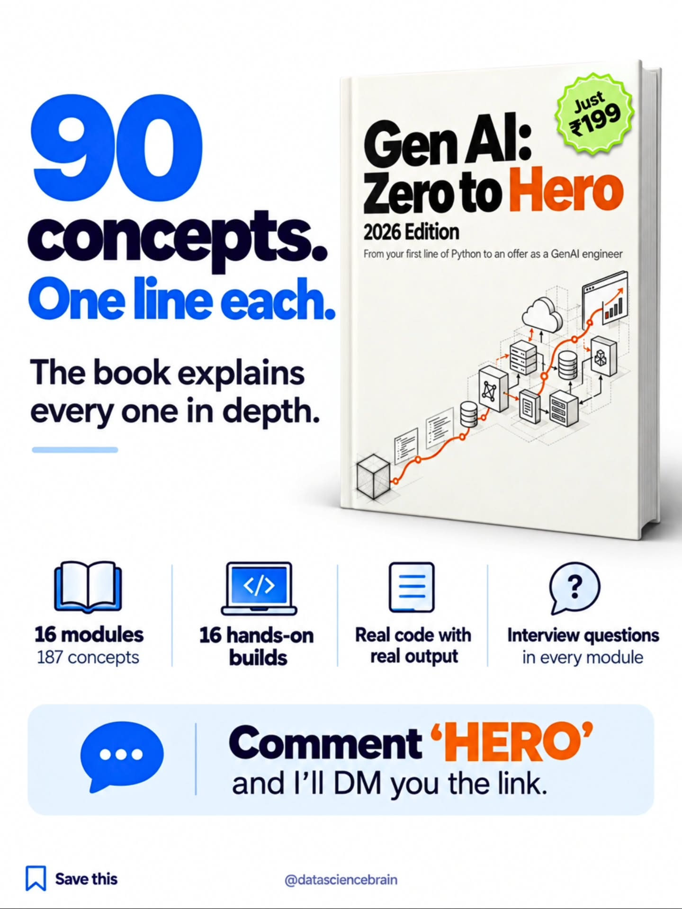
The map above is the public part — the playbook fills in the depth, one article per section at a time.